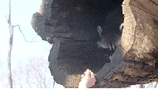

Shuai LiPhD Student
B. Thomas Golisano College of Computing and Information Sciences |
|
About Me
I am a PhD student (2021.8-) at the B. Thomas Golisano College of Computing and Information Sciences (GCCIS) of Rochester Institute of Technology (RIT), working with Dr Yu Kong. I have also worked closely with Dr Hamid Rezatofighi previously. Before joining RIT, I received my Master's degree (2014.9-2017.3) at the School of Automation Beijing Institute of Technology, and my bachelor's degree (2010.9-2014.6) of Electrical Engineering at Southwest Jiaotong University. .
My research theme is to apply Machine Learning techniques to solve real-world Computer Vision problems. In the past I have mainly worked on Visual Multi-Object Tracking. Despite the popularity of Deep Learning in Computer Vision nowadays, I still firmly believe the value of traditional Probabilitic Graphical Models.
I am actively looking for research intern positions and (possibly) a PhD position outside US(Due to PP10043 that ban certain Chinese students' visa). Please drop me an email if interested.
News [ ]
]
- 2021.08.24: I joined ACTION Lab at Rochester Institute of Technology.
- 2022.03.03: One paper is accepted by CVPR 2022!.
Publications
Conferences
Shuai Li, Yu Kong, Hamid Rezatofighi
IEEE/CVF Conference on Computer Vision and Pattern Recognition (CVPR), 2022
Academic Services
Conference Reviewer
- IEEE/CVF Conference on Computer Vision and Pattern Recognition (CVPR) 2022.
- IEEE/CVF International Conference on Computer Vision (ICCV) 2021.
- the Association for the Advancement of Artificial Intelligence (AAAI) 2022.
- International Joint Conference of Artificial Intelligence (IJCAI) 2022.
Journal Reviewer
|
Last Updated on March 05, 2022  |